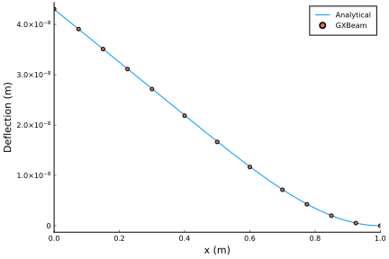
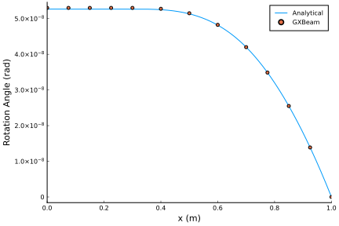
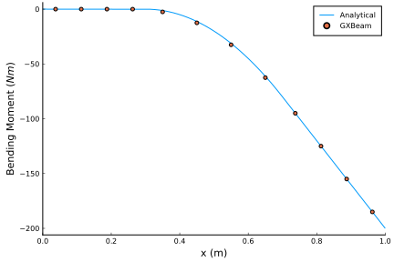

Cantilever with a Uniform Load
This example shows how to predict the behavior of a cantilever beam which is partially subjected to a uniform distributed load.
This example is also available as a Jupyter notebook: cantilever.ipynb.
using GXBeam, LinearAlgebra
nelem = 12
# create points
a = 0.3
b = 0.7
L = 1.0
n1 = n3 = div(nelem, 3)
n2 = nelem - n1 - n3
x1 = range(0, 0.3, length=n1+1)
x2 = range(0.3, 0.7, length=n2+1)
x3 = range(0.7, 1.0, length=n3+1)
x = vcat(x1, x2[2:end], x3[2:end])
y = zero(x)
z = zero(x)
points = [[x[i],y[i],z[i]] for i = 1:length(x)]
# index of endpoints for each beam element
start = 1:nelem
stop = 2:nelem+1
# create compliance matrix for each beam element
EI = 1e9
compliance = fill(Diagonal([0, 0, 0, 0, 1/EI, 0]), nelem)
# create assembly
assembly = Assembly(points, start, stop, compliance=compliance)
# set prescribed conditions (fixed right endpoint)
prescribed_conditions = Dict(
nelem+1 => PrescribedConditions(ux=0, uy=0, uz=0, theta_x=0, theta_y=0,
theta_z=0)
)
# create distributed load
q = 1000
distributed_loads = Dict(
ielem => DistributedLoads(assembly, ielem; fz = (s) -> q) for ielem in
n1+1:n1+n2
)
# perform static analysis
system, state, converged = static_analysis(assembly;
prescribed_conditions = prescribed_conditions,
distributed_loads = distributed_loads,
linear = true)Comparison with Analytical Results
We can construct the analytical solution for this problem by integrating from the free end of the beam and applying the appropriate boundary conditions.
# construct analytical solution
dx = 1e-6
x_a = 0.0:dx:L
q_a = (x) -> a <= x <= b ? -q : 0 # define distributed load
V_a = cumsum(-q_a.(x_a) .* dx) # integrate to get shear
M_a = cumsum(V_a .* dx) # integrate to get moment
slope_a = cumsum(M_a./EI .* dx) # integrate to get slope
slope_a .-= slope_a[end] # apply boundary condition
deflection_a = cumsum(slope_a .* dx) # integrate to get deflection
deflection_a .-= deflection_a[end] # apply boundary condition
# get elastic twist angle
theta_a = -atan.(slope_a)
# switch analytical system frame of reference
M_a = -M_aPlotting the results reveals that the analytical and computational solutions show excellent agreement.
using Plots
pyplot()# deflection plot
plot(
xlim = (0.0, 1.0),
xticks = 0.0:0.2:1.0,
xlabel = "x (m)",
ylabel = "Deflection (m)",
grid = false,
overwrite_figure=false
)
x = [assembly.points[ipoint][1] + state.points[ipoint].u[1] for ipoint =
1:length(assembly.points)]
deflection = [state.points[ipoint].u[3] for ipoint = 1:length(assembly.points)]
plot!(x_a, deflection_a, label="Analytical")
scatter!(x, deflection, label="GXBeam")
plot!(show=true)
# elastic twist plot (euler angle)
plot(
xlim = (0.0, 1.0),
xticks = 0.0:0.2:1.0,
xlabel = "x (m)",
ylabel = "Rotation Angle (rad)",
grid = false,
overwrite_figure=false
)
x = [assembly.points[ipoint][1] + state.points[ipoint].u[1]
for ipoint = 1:length(assembly.points)]
theta = [4*atan.(state.points[ipoint].theta[2]/4) for ipoint =
1:length(assembly.points)]
plot!(x_a, theta_a, label="Analytical")
scatter!(x, theta, label="GXBeam")
plot!(show=true)
# bending moment plot
plot(
xlim = (0.0, 1.0),
xticks = 0.0:0.2:1.0,
xlabel = "x (m)",
ylabel = "Bending Moment (\$Nm\$)",
grid = false,
overwrite_figure=false
)
x = [assembly.elements[ielem].x[1] + state.elements[ielem].u[1] for
ielem = 1:length(assembly.elements)]
M = [state.elements[ielem].Mi[2] for ielem = 1:length(assembly.elements)]
plot!(x_a, M_a, label="Analytical")
scatter!(x, M, label="GXBeam")
plot!(show=true)
Note that we could have easily performed a nonlinear analysis for this problem by setting linear=false.
This page was generated using Literate.jl.